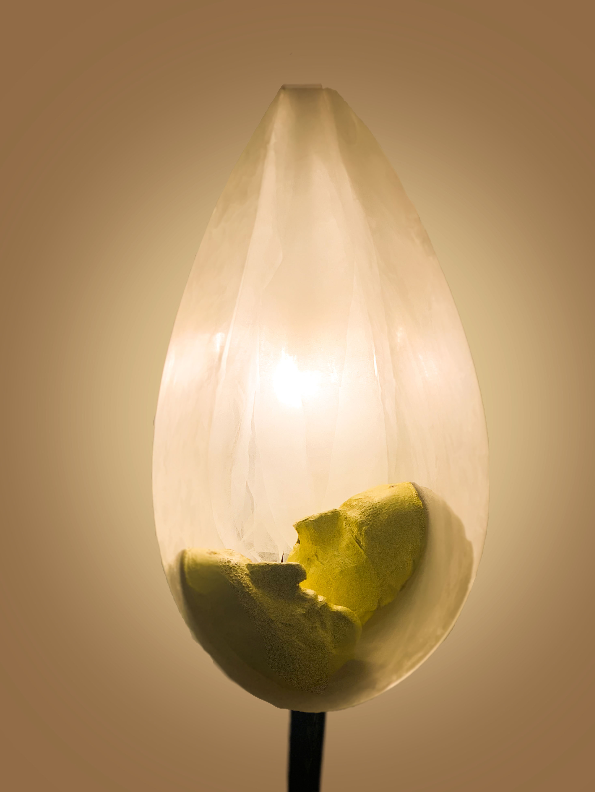

Phantom


What?
Here I have tried to create an atmosphere. The luminaire should not only give light, it should entertain the viewer, make him curious.
What is hidden in this soft light that plays around the profiles of the two faces?